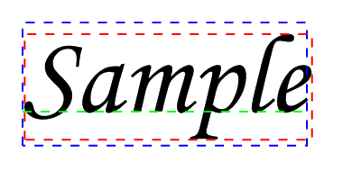

VectorTextHeight()
语法
Result.d = VectorTextHeight(Text$ [, Flags])概要
Measures the height of the given text in the current vector drawing font.
参数
Text$ The text (single-line) to measure. Flags (可选) 可以是下列值的组合︰ #PB_VectorText_Default : Return the logical bounding box of the text #PB_VectorText_Visible : Return the visible bounding box of the text #PB_VectorText_Offset : Return the offset of the bounding box from the current position rather than the height #PB_VectorText_Baseline: Return the offset of the text baseline from the current position
返回值
Returns the text height in units of the vector drawing output.
备注
The dimensions of drawn text can be defined in terms of two bounding boxes:
The "logical bounding box" of a character or text defines the space that the cursor must move to properly draw text next to each other. However, the actual drawn characters may extend beyond that box (for example in case of cursive or serif fonts). When determining where to draw text, the logical bounding box is the interesting one.
The "visible bounding box" of a character or text defines the area in which the text is actually drawn. This area is usually larger than the logical bounding box. The visible dimensions of the text can be retrieved by specifying the #PB_VectorText_Visible flag. The visible dimensions of the text can be at an offset to the logical ones. This offset can be calculated by specifying the #PB_VectorText_Offset flag.
The "baseline" defines the vertical distance from the origin of the drawn text to the line where the letters "sit". It is useful to draw text of different heights on a single line. The baseline value for the text can be retrieved by specifying the #PB_VectorText_Baseline flag.
The following example shows a sample text with the logical bounding box in blue, the visible bounding box in red and the location of the baseline in green. The origin at which the text is drawn is the upper left corner of the logical bounding box (blue).
示例
If OpenWindow(0, 0, 0, 400, 200, "VectorDrawing", #PB_Window_SystemMenu | #PB_Window_ScreenCentered) CanvasGadget(0, 0, 0, 400, 200) LoadFont(0, "Monotype Corsiva", 20, #PB_Font_Italic) If StartVectorDrawing(CanvasVectorOutput(0)) VectorFont(FontID(0), 125) Text$ = "Sample" ; draw text MovePathCursor(25, 25) DrawVectorText(Text$) ; draw logical bounding box AddPathBox(25, 25, VectorTextWidth(Text$), VectorTextHeight(Text$)) VectorSourceColor(RGBA(0, 0, 255, 255)) DashPath(2, 10) ; draw visible bounding box AddPathBox(25 + VectorTextWidth(Text$, #PB_VectorText_Visible|#PB_VectorText_Offset), 25 + VectorTextHeight(Text$, #PB_VectorText_Visible|#PB_VectorText_Offset), VectorTextWidth(Text$, #PB_VectorText_Visible), VectorTextHeight(Text$, #PB_VectorText_Visible)) VectorSourceColor(RGBA(255, 0, 0, 255)) DashPath(2, 10) ; draw baseline MovePathCursor(25, 25 + VectorTextHeight(Text$, #PB_VectorText_Baseline)) AddPathLine(VectorTextWidth(Text$), 0, #PB_Path_Relative) VectorSourceColor(RGBA(0, 255, 0, 255)) DashPath(2, 10) StopVectorDrawing() EndIf Repeat Event = WaitWindowEvent() Until Event = #PB_Event_CloseWindow EndIf
参阅
VectorTextWidth(), DrawVectorText(), DrawVectorParagraph(), VectorParagraphHeight(), VectorFont()
已支持操作系统
所有